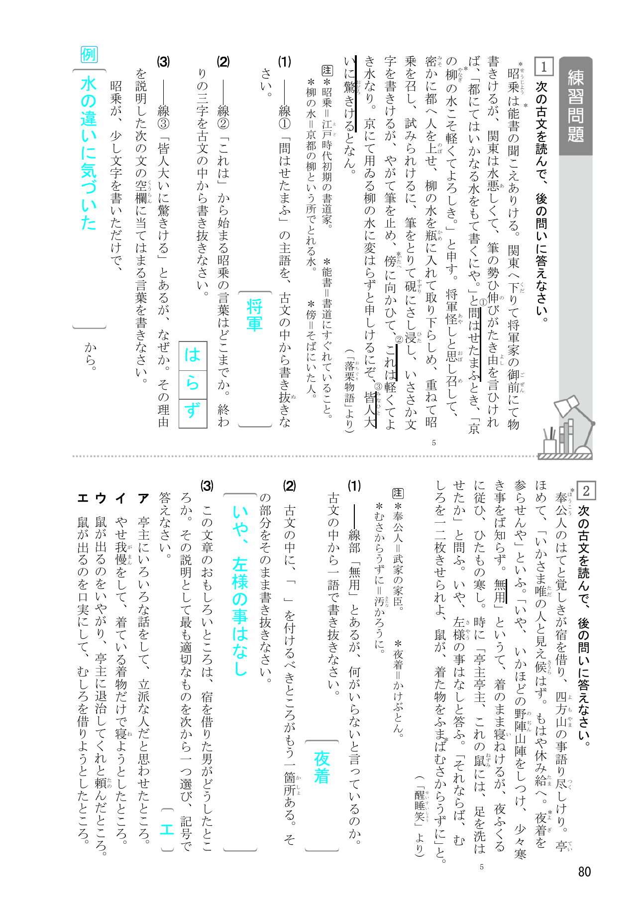
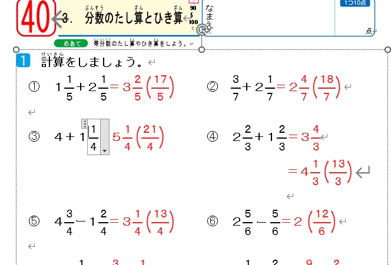

01
イメージのまま抽出できる。
InDesignのイメージを保ったWordデータが手に入ります。

InDesignのイメージを保ったWordデータが手に入ります。


複雑な要素も、Word上で編集しやすい状態にして抽出します。
元のレイアウトを再現するだけでなく、利用シーンに合わせたフォーマットへの変換も可能です。
Word化したデータは、改訂だけでなく、その先の制作にも活用できます。
デジタルコンテンツ向けの編集データとして
翻訳しやすい編集データとして
教材採用校向けのテキストデータや図版データとして
原稿量やご希望のフォーマットによって作業内容が異なるため、データを確認したうえで個別にお見積りします。まずはお気軽にご相談ください。
はい。InDesignデータだけでなく、PDFからの変換についてもご相談いただけます。データの状態を確認し、対応方法をご案内します。
はい。元のレイアウトを活かすだけでなく、ご希望の用途や運用方法に合わせたWordフォーマットへの調整にも対応します。
ページ数、レイアウトの複雑さ、ご希望のフォーマットや編集方法などを確認し、個別にお見積りします。